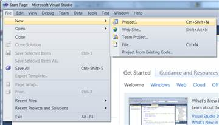
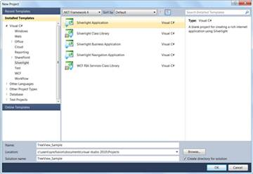
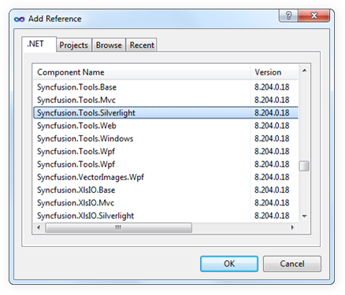
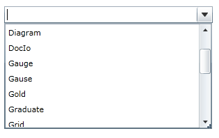

1. Open Visual Studio, On the File menu click New -> Project. This opens the New Project Dialog box as shown below.-.

Figure 18: Creating New Silverlight Project
2. In the Project Dialog window, select Silverlight Application and, in the Name field, type the name of the project.Click OK. This is illustrated as shown below.

Figure 19: Creating New Silverlight Application
3. Go to Solution Explorer. Right-click References folder and click Add Reference. Add the Syncfusion.Tools.Silverlight assembly to the project References folder.

Figure 20: Adding Reference
|
[XAML] xmlns:syncfusion="clr-namespace:Syncfusion.Windows.Tools.Controls; assembly=Syncfusion.Tools.Silverlight" |
4. Add Syncfusion.Tools.Silverlight reference in XAML and C# code as follows.
|
[C#] using Syncfusion.Windows.Tools.Controls; |
5. Click and open the C# file and add AutoComplete to the application.
|
[C#] AutoComplete AutoComplete1 = new AutoComplete(); List<String> ProductSource = new List<String>(); customSource.Add("WF"); customSource.Add("WPF"); customSource.Add("Silverlight"); customSource.Add("Asp.Net"); customSource.Add("Mvc"); customSource.Add("Tools"); customSource.Add("Diagram"); customSource.Add("Gauge"); customSource.Add("Gause"); customSource.Add("GridView"); customSource.Add("Graduate"); customSource.Add("Gold"); customSource.Add("Chart"); customSource.Add("Business Intelligence"); customSource.Add("Schedule"); customSource.Add("Grid"); customSource.Add("DocIo"); customSource.Add("XlsIo"); customSource.Add("Pdf"); this.AutoComplete1.CustomSource = ProductSource; |

Figure 21: AutoComplete Created Using C#